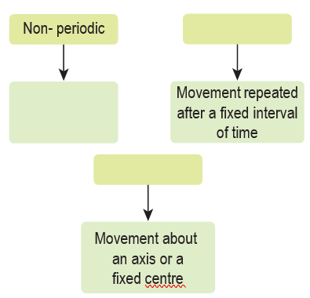
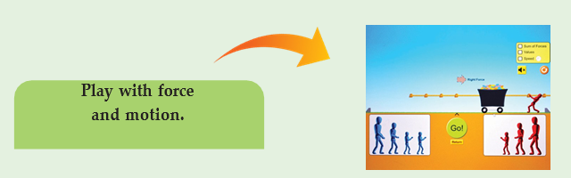
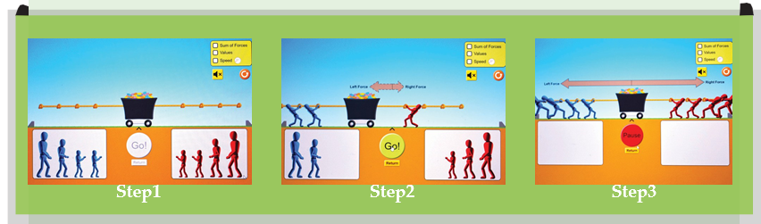

Distance (d) |
0 |
4 |
|
12 |
|
20 |
Time (t) |
0 |
2 |
4 |
|
8 |
10 |
1. Kicking a ball : Contact force :: Falling of leaf : dash
2. Distance : metre :: Speed : dash
3. Circulatory motion : A spinning top :: Oscillatory motion : dash

1. The force which acts on an object without physical contact. Dash
2. A change in the position of an object with time. Dash
3. The motion which repeats itself after a fixed interval of time. Dash
4. The motion of an object which covers equal distances in equal intervals of time. dash
5. A machine capable of carrying out a complex series of actions automatically. dash
1. Define force.
2. Name different types of motion based on the path.
3. If you are sitting in a moving car, will you be at rest or motion with respect your friend sitting next to you?
4. Rotation of the earth is a periodic motion. Justify.
5. Differentiate between rotational and curvilinear motion
1. What is motion? Classify different types of motion with examples.
1. A vehicle covers a distance of 400km in 5 hour. Calculate its speed.
1. Linear motion dash
2. Curvilinear motion dash
3. Self rotary motion – motion of the wheel in a cart
4. Circular motion dash
5. Oscillatory motion dash
6. Irregular motion dash
ICT CORNER
Force and motion

Steps:
•Lets learn force and motion on PhET in Google browser. Download and install.
•Drag any one side and place him in the knot portion of the rope. Now click go.
•If placed on the right side then the load will move in that direction. The place of the man and the number of man can be changed. The direction of force and the unit of force will display on the screen.
•If we place equal number of men on both the sides the load will not move.
•By changing the number of men the strength of force can be changed.

URL:
https://phet.colorado.edu/en/simulation/forces-and-motion-basics
* pictures are indicative only.